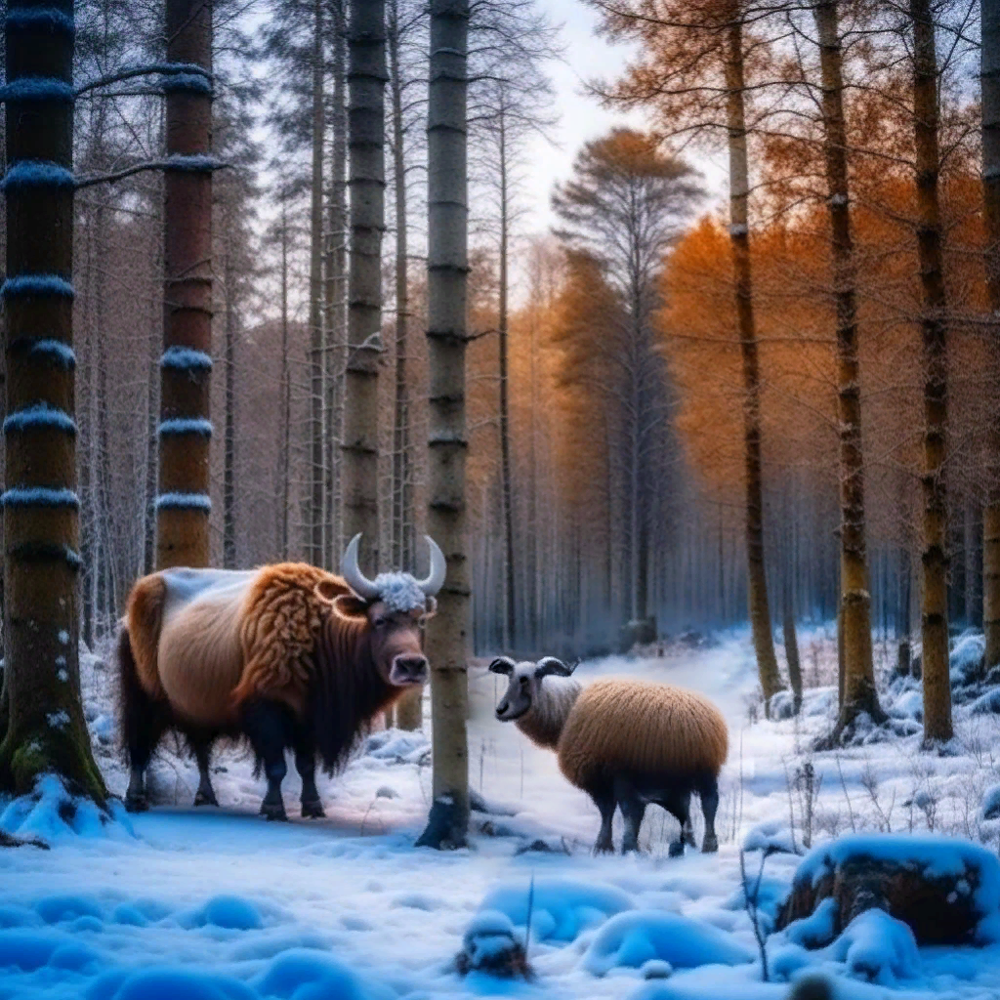
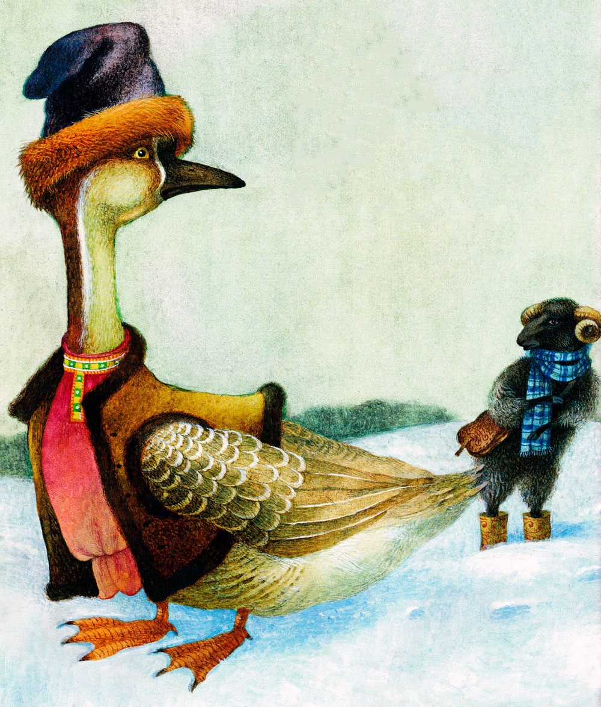
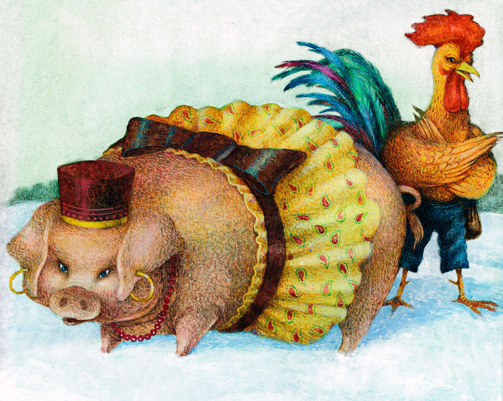
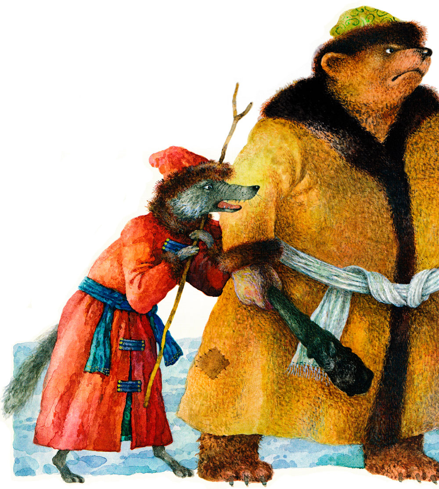
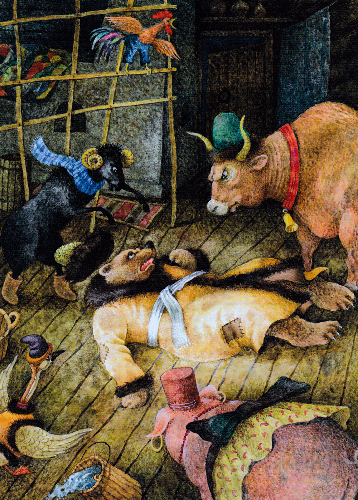
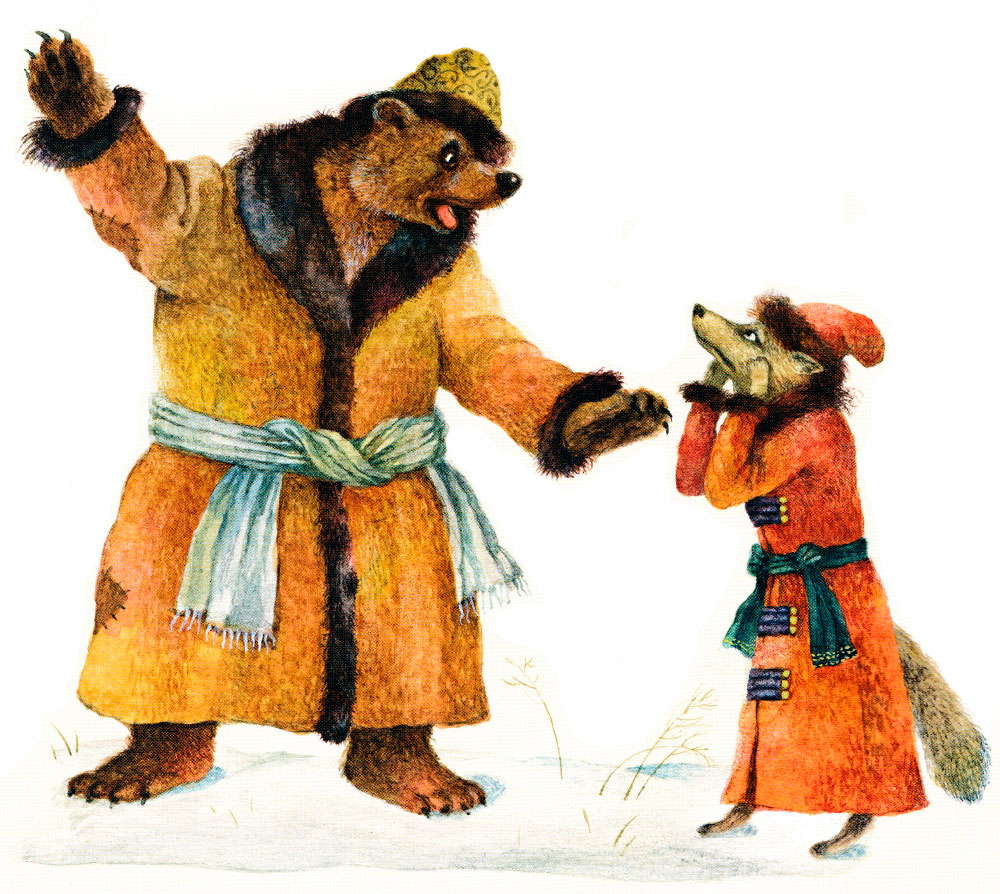

Зимовье зверей

Шел бык лесом, попадается ему навстречу баран.
- Куда, баран, идешь? - спросил бык.
- От зимы лета ищу, - говорит баран.
- Пойдем со мною!
Вот пошли вместе, попадается им навстречу свинья.
- Куда, свинья, идешь? - спросил бык.
- От зимы лета ищу, - отвечает свинья.
- Иди с нами.
Пошли втроем дальше, навстречу им гусь.

- Куда, гусь, идешь? - спрашивает бык.
- От зимы лета ищу, - отвечает гусь.
- Ну, иди за нами!
Вот гусь и пошел за ними. Идут, а навстречу им петух.
- Куда, петух, идешь? - спросил бык.
- От зимы лета ищу, - отвечает петух.
- Иди за нами!

Вот идут они путем-дорогою и разговаривают промеж себя:
- Как же, братцы-товарищи! Время подходит холодное, где тепла искать? Бык и сказывает:
- Ну, давайте избу строить, а то и впрямь зимою замерзнем.
Баран говорит:
- У меня шуба тепла - вишь какая шерсть! Я и так перезимую.
Свинья говорит:
- А по мне хоть какие морозы - я не боюсь: зароюсь в землю и без избы прозимую.
Гусь говорит:
- А я сяду в середину ели, одно крыло постелю, а другим оденусь, меня никакой холод не возьмет; я и так перезимую.
Петух говорит:
- И я тоже!
Бык видит - дело плохо, надо одному хлопотать.
- Ну, - говорит, - вы, как хотите, а я стану избу строить.
Выстроил себе избушку и живет в ней. Вот пришла зима холодная, стали пробирать морозы; баран делать нечего, приходит к быку.
- Пусти, брат, погреться.
- Нет, баран, у тебя шуба теплая; ты и так перезимуешь. Не пущу!
- А коли не пустишь, то я разбегуся и вышибу из твой избы бревно; тебе же будет холоднее.
Бык думал-думал: “Дай пущу, а то, пожалуй, и меня заморозит”,- и пустил барана.
Вот и свинья озябла, пришла к быку:
- Пусти, брат, погреться.
- Нет, не пущу! Ты в землю зароешься и так перезимуешь.
- А не пустишь, так я рылом все столбы подрою да твою избу уроню.
Делать нечего, надо пустить. Пустил и свинью. Тут пришли к быку гусь и петух:
- Пусти, брат, к себе погреться.
- Нет, не пущу! У вас по два крыла: одно постелешь, другим оденешься; и так перезимуете!
- А не пустишь, - говорит гусь, - так я весь мох из твоих стен повыщиплю, тебе же холоднее будет.
- Не пустишь? - говорит петух. - Так я взлечу наверх, всю землю с потолка сгребу, тебе же холоднее будет.
Что делать быку? Пустил жить к себе и гуся и петуха.
Вот живут они себе да поживают в избушке. Отогрелся в тепле петух и начал песенки распевать.
Услышала лиса, что петух песенки распевает, захотелось петушком полакомиться, да как достать его? Лиса отправилась к медведю да волку и сказала:
- Ну, любезные мои! Нашла я для всех поживу: для тебя, медведь, - быка, для тебя волк, - барана, а для себя - петуха.
- Хорошо, лисонька! - говорят медведь и волк. - Мы твоих услуг никогда не забудем. Пойдем же зарежем их да поедим!

Лиса привела их к избушке. Медведь говорит волку:
— Иди ты вперед!
А волк кричит:
— Нет, ты посильнее меня, иди ты вперед!
Ладно, пошел медведь; только что в двери — бык наклонил голову и припер его рогами к стенке. А баран разбежался, да как бацнет медведя в бок и сшиб его с ног. А свинья рвет и мечет в клочья. А гусь подлетел — глаза щиплет. А петух сидит на брусу и кричит:
— Подайте сюда, подайте сюда!

Волк с лисой услыхали крик да бежать!
Вот медведь рвался, рвался, насилу вырвался, догнал волка и рассказывает:
— Ну, что было мне! Этакого страху отродясь не видывал. Только что вошел я в избу, откуда ни возьмись, баба с ухватом на меня… Так к стене и прижала! Набежало народу пропасть: кто бьет, кто рвет, кто шилом в глаза колет. А еще один на брусу сидел да все кричал: «Подайте сюда, подайте сюда!» Ну, если б подали к нему, кажись бы, и смерть была!
